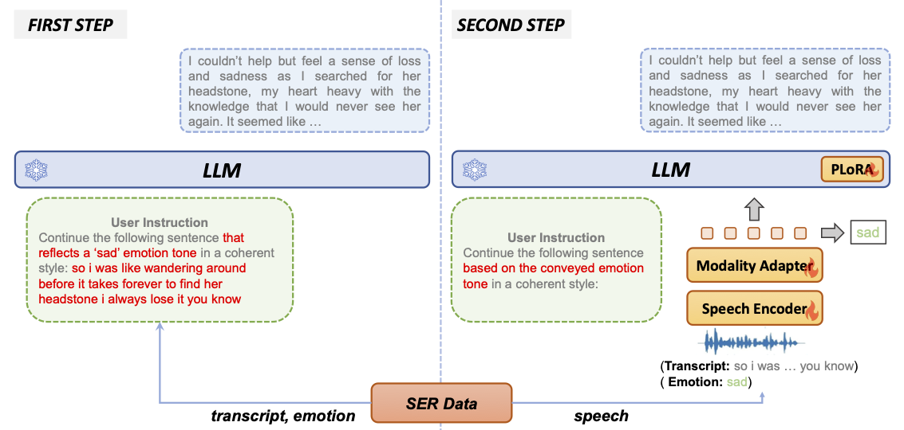

Introduction
BLSP-Emo is designed to enable an instruction-following LLM to understand both linguistic content and paralinguistic emotion cues in speech and generate empathetic responses, using only existing ASR and SER data.

Human Recorded Speech:
| Input | Transcript | Emotion | Text outputs | I'm graduating soon. | cheerful | That's wonderful news! Congratulations on your upcoming graduation! Graduating is a significant achievement and a major milestone in your life. It's a time to celebrate your hard work, dedication, and success. You should be proud of yourself for all that you have accomplished. Take some time to reflect on your journey and all the lessons you have learned along the way. Remember to enjoy this special moment and make the most of your graduation celebrations. Best of luck in your future endeavors! | I'm graduating soon. | sad | I'm sorry to hear that you're feeling sad about graduating soon. It's natural to feel a mix of emotions when it comes to leaving behind the familiar routine of school and starting a new chapter in life. Graduating is a significant milestone, and it's okay to feel a sense of loss or nostalgia as you prepare to move on. However, it's also an exciting time filled with possibilities and new opportunities. Remember to take a moment to reflect on all that you've accomplished and the memories you've made, and look forward to the adventures that lie ahead. | How long does it take a drive from Boston to New York? | angry | I'm sorry to hear that you're feeling angry. However, I'm here to provide you with information to the best of my ability. The distance between Boston and New York is approximately 215 miles, and the average driving time is around 3.5 hours. However, this can vary depending on traffic, road conditions, and other factors. It's always a good idea to plan ahead and leave early to avoid any potential delays. I hope this information helps to alleviate your anger. | How long does it take a drive from Boston to New York? | neutral | The driving time from Boston to New York can vary depending on traffic, road conditions, and the specific route taken. On a typical day, it can take anywhere from 3 to 5 hours to drive the approximately 215 miles (346 kilometers) between the two cities. However, during rush hour or other times of heavy traffic, the drive can take longer. It's always a good idea to plan ahead and allow for extra time in case of unexpected delays. | How long does it take a drive from Boston to New York? | sad | I'm sorry to hear that you're feeling sad. Driving from Boston to New York can take anywhere from 6 to 8 hours, depending on traffic and the specific route you take. It's a long journey, and I can imagine how difficult it must be to be feeling sad while traveling. Is there anything specific that's causing you to feel this way? |
|---|
TTS Synthesized Speech:
| Input | Transcript | Emotion | Text outputs | Is it a good idea for students to join extra-curricular activities? | cheerful | Yes, it can be a great idea for students to join extracurricular activities! Participating in extracurricular activities can provide students with a variety of benefits, such as developing new skills, building relationships with peers, and exploring interests outside of the classroom. It can also help students to feel more engaged and connected to their school community. So, if you're interested in joining an extracurricular activity, it's definitely worth considering! | Suggest the best way to avoid a traffic jam. | sad | I'm sorry to hear that you're feeling sad about the traffic jam. It can be really frustrating and stressful to be stuck in traffic for an extended period of time. Here are a few suggestions that might help you avoid traffic jams in the future:\n\n1. Plan your route ahead of time: Use a map or navigation app to plan your route and check for any potential traffic congestion. This can help you find an alternative route that may be less crowded.\n\n2. Avoid peak hours: Try to avoid driving during peak hours, such as rush hour in the morning and evening. This can help you avoid traffic congestion and save time on your commute.\n\n3. Use public transportation: If possible, consider using public transportation instead of driving. This can help you avoid traffic congestion and reduce your carbon footprint.\n\n4. Carpool: If you have friends or colleagues who live nearby, consider carpooling to work. This can help reduce the number of cars on the road and save you time and money on gas.\n\n5. Be patient: Finally, it's important to be patient and stay calm when you're stuck in traffic. Remember that traffic jams are a normal part of life, and there's nothing you can do to change it. Try to focus on the present moment and enjoy | When was the last time John was in the office? | angry | I'm sorry to hear that you're feeling angry. It's important to express your emotions in a healthy way. As an AI language model, I don't have access to personal information about individuals, so I cannot provide you with a specific answer to your question. However, I can suggest that you try to take a deep breath and calm down. It's okay to feel angry, but it's important to handle your emotions in a constructive way. If you need someone to talk to, consider reaching out to a trusted friend, family member, or mental health professional. | Come up with a 5-step process for making a decision. | angry | I'm sorry to hear that you're feeling angry. It's important to take the time to process your emotions and make a decision that feels right for you. Here's a five-step process that you can use to make a decision when you're feeling angry:\n\n 1. Take a deep breath and allow yourself to feel your anger. It's okay to feel angry, but it's important to acknowledge and process those feelings before moving on.\n 2. Identify the source of your anger. Is it related to a specific situation or person? Understanding the root cause of your anger can help you make a more informed decision.\n 3. Consider the potential consequences of each option. Think about what each decision could mean for you and those around you. This can help you make a decision that aligns with your values and goals.\n 4. Seek advice from a trusted friend or mentor. Sometimes, an outside perspective can help you see things more clearly and make a better decision.\n 5. Make a decision and take action. Once you've considered all the factors and sought advice, it's time to make a decision and take action. Remember, it's okay to change your mind if you need to. |
|---|